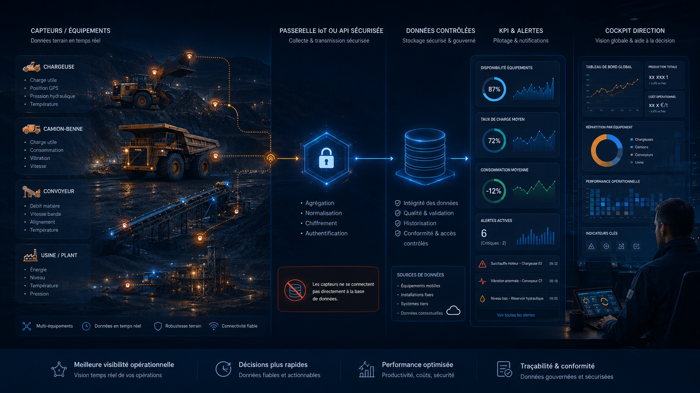

Capteurs & temps réel
Capteurs industriels & pilotage temps réel
L’intégration de capteurs industriels et de données temps réel se construit progressivement, selon l’infrastructure, la maturité digitale et les besoins de pilotage de l’entreprise.
Architecture de collecte
Exemple d’architecture de collecte et pilotage temps réel
Les capteurs ne se connectent pas directement à la base de données. Les mesures passent par une passerelle IoT, une API sécurisée ou un système industriel intermédiaire avant d’alimenter les données contrôlées, les KPI, les alertes et le cockpit Direction.
Flux capteurs, gateway/API, KPI et cockpit Direction — démonstration anonymisée.

Principe technique
Une alimentation sécurisée avant exploitation KPI
Les capteurs ne se connectent pas directement à une base de données. Ils passent par une gateway IoT, une API sécurisée ou un système industriel intermédiaire avant d’alimenter les données de pilotage.
Cette approche permet de contrôler les flux, filtrer les données utiles, fiabiliser les formats et intégrer progressivement les mesures dans les tableaux de bord KPI.
Exemples de sources
Des données industrielles utiles au pilotage opérationnel
Les données issues d’équipements, de systèmes industriels ou de dispositifs connectés peuvent enrichir les KPI lorsque leur qualité, leur fréquence et leur usage métier sont clairement définis.
Déploiement progressif
Le temps réel comme évolution maîtrisée
Le temps réel est une évolution progressive selon l’infrastructure, la maturité digitale et les besoins de l’entreprise. Une première étape peut consister à fiabiliser les saisies terrain et les imports contrôlés, puis à connecter certains systèmes existants, avant d’intégrer des capteurs ou flux quasi temps réel lorsque leur valeur métier est démontrée.
- Identifier les mesures réellement utiles aux décisions.
- Contrôler la qualité et la fréquence des données reçues.
- Transformer les signaux techniques en KPI compréhensibles.
- Déclencher des alertes adaptées aux priorités opérationnelles.
Capteurs & KPI
Vous voulez préparer une évolution vers des données quasi temps réel ?
Commençons par qualifier les sources disponibles, les passerelles possibles et les KPI prioritaires.